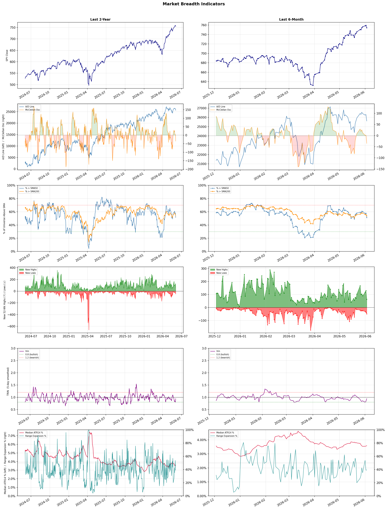

A daily research map of market breadth, industry rotation, and technical setups
| Item | Read |
|---|---|
| Regime | Selective Risk-On |
| Risk posture | Selective |
| Indices | QQQ 744.21 (-0.3% today) |
| Universe | 1,704 stocks tracked · 63 new 52-week highs · 30 active swing setups |
| Breadth | 51.3% of tracked stocks are above SMA50 — neutral range, new highs exceed new lows (63 vs 49), McClellan oscillator (breadth momentum) is negative at -35.3 |
| Leadership | Semiconductors, Computer Hardware, and Electronic Components |
| Weakest groups | Household & Personal Products, Packaged Foods, and Financial Data & Stock Exchanges |
Use this report to prioritize research and chart review; validate entries, stops, liquidity, earnings, and risk before acting.
| Item | Read |
|---|---|
| Primary read | Selective Risk-On regime with Selective risk posture. |
| Research queue | VSH, NVTS, ARM, MRVL, HIMX |
| Leadership focus | Semiconductors, Computer Hardware, and Electronic Components |
| Caution list | Household & Personal Products, Packaged Foods, and Financial Data & Stock Exchanges |
| Review prompt | Check extension risk, chart location, fundamentals, valuation, and earnings before using any research row. |
| Item | Read |
|---|---|
| Primary read | 2 active risk warnings; use screen output as watchlist input only. |
| Bullish screens | ALAB, ALGM, AMD, STX, WDC |
| Bearish screens | TUYA, SBET, XP, GTM, TSCO |
| Alerts / levels | Automated trigger, stop, ATR, liquidity, reward/risk, and event-risk levels are pending future enrichment. |
| Review prompt | Open the linked chart, define trigger and invalidation, then check liquidity and event risk independently. |
Risk Posture: Selective — screen backdrop supports selective research in leading industries
Metric context: McClellan below -50 = elevated selling pressure; below -100 = washout territory. Range Expansion = share of stocks with daily range above their 20-day average. Signal Density = share of tracked names appearing in signal screens.
| Breadth Date | % > SMA50 | % > SMA200 | New Highs | New Lows | McClellan | Median Range | Avg Range | Median ATR14 | Range Expansion | Signal Density |
|---|---|---|---|---|---|---|---|---|---|---|
| 2026-06-03 | 51.3% | 53.8% | 63 | 49 | -35.3 | 3.0% | 3.6% | 3.6% | 39.3% | 6.9% |

Prior comparison date: June 2, 2026
| Metric | Prior | Current | Change |
|---|---|---|---|
| Regime | Selective Risk-On | Selective Risk-On | unchanged |
| Risk Posture | Selective | Selective | unchanged |
| % > SMA50 | 57.6% | 51.3% | -6.3 pts |
| % > SMA200 | 55.6% | 53.8% | -1.7 pts |
| New Highs | 129 | 63 | -66 |
| New Lows | 37 | 49 | -12 |
Top-10 industries entering: REIT - Hotel & Motel. Top-10 industries leaving: Semiconductor Equipment & Materials. New multi-signal long setups: AEHR, ALAB, ALGM, AMAT, AMD, APLE, BWA, DRH, FAST. New multi-signal short setups: CPRT.
| Status | Tickers | Read |
|---|---|---|
| Added | AEHR, ALAB, ALGM, AMAT, AMD, APLE, BWA, CPRT | New technical screen matches vs prior report. |
| Removed | ALOY, AVGO, BB, BEAM, BHP, BMO, BVN, CDNS | No longer present in today's technical screen matches. |
| Still Active | MPC, STX, WDC, WERN | Appeared in both current and prior reports. |
| Promoted | none | Model Screen Score improved by at least 15 points. |
| Downgraded | none | Model Screen Score declined by at least 15 points. |
| Direction | Industry | ETF | Prior Rank | Current Rank | Days | Rank Change |
|---|---|---|---|---|---|---|
| Rose | Solar | TAN | 97 | 4 | 42 | +93 |
| Rose | Diagnostics & Research | N/A | 98 | 19 | 35 | +79 |
| Rose | Copper | COPX | 85 | 6 | 35 | +79 |
| Rose | Airlines | N/A | 91 | 24 | 42 | +67 |
| Rose | Aerospace & Defense | ITA | 79 | 21 | 35 | +58 |
Bull: The solar industry is experiencing a surge in relative strength primarily due to a significant shift in global energy dynamics, as highlighted by the recent headline stating that "Wind & Solar Overtake Gas Globally." This transition is driven by increasing investments in renewable energy, supported by favorable policies and technological advancements, which have propelled the Solar ETF (TAN) to a new 52-week high. Additionally, the impressive 120% gain over the past five months suggests a market correction from previous lows, indicating growing investor confidence in solar as a leading energy source amid rising concerns over fossil fuels.
Bear: While the recent surge in the solar sector, as evidenced by the 120% gain in the Solar ETF (TAN), may appear promising, it is essential to recognize that this rally could be a temporary rebound rather than a sustainable trend. The solar industry remains vulnerable to significant headwinds, including supply chain disruptions, rising material costs, and potential regulatory changes that could undermine profitability. Furthermore, the shift towards renewable energy is not uniform globally, and reliance on government subsidies and incentives may create volatility, making the long-term outlook for solar less certain than it seems.
Verdict: The solar industry’s recent surge is fundamentally driven by a global shift towards renewable energy, bolstered by increased investments, favorable policies, and technological advancements, as evidenced by the Solar ETF (TAN) reaching a new 52-week high. However, key risks remain, particularly related to supply chain disruptions and reliance on government subsidies, which could lead to volatility and undermine long-term profitability. Investors should remain cautious and monitor these potential headwinds while considering positions in the sector.
Sources: Yahoo Finance, Google News
Bull: The Diagnostics & Research sector is experiencing rising relative strength primarily due to increasing investor confidence in healthcare stocks, as highlighted by positive coverage from sources like Morningstar and Insider Monkey, which identify top picks in the industry. Additionally, the anticipated integration of AI in healthcare, as mentioned by U.S. News, is driving innovation and growth potential, further enhancing the sector's appeal and contributing to significant stock price movements, such as Agilent Technologies' projected 43.86% upside and Waters' recent 5.3% rally.
Bear: While the Diagnostics & Research sector may currently exhibit rising relative strength and positive sentiment from analysts, this enthusiasm could be overblown, especially given the potential for economic headwinds such as rising interest rates and inflation, which could pressure healthcare budgets and spending. Additionally, the integration of AI, while promising, is still in its infancy and may face significant regulatory hurdles and implementation challenges, potentially delaying the anticipated growth and innovation in the sector. Therefore, investors should remain cautious, as the current rally may not be sustainable amidst these underlying risks.
Verdict: The Diagnostics & Research sector's rising strength is fundamentally driven by increasing investor confidence fueled by positive analyst coverage and the promising integration of AI technologies, which are expected to enhance innovation and growth potential. However, investors should be cautious of economic headwinds, such as rising interest rates and inflation, which could strain healthcare budgets and undermine the sustainability of the current rally. It is advisable to monitor these macroeconomic factors closely before making investment decisions in this sector.
Sources: Google News
Bull: Copper's rising relative strength can be attributed to its critical role in the transition to renewable energy and the AI boom, as highlighted by headlines discussing the "Grid Resilience Boom" and the competition between copper, gold, and silver in this context. Additionally, the significant returns of copper ETFs, such as the one that returned 156% in a year while offering a 9.7% yield, underscore strong investor sentiment and confidence in copper's demand driven by infrastructure development and green technologies. This trend is further supported by the focus on commodities, particularly copper, in the current market themes, indicating a robust outlook for the metal in the coming years.
Bear: While the bullish narrative around copper's role in renewable energy and AI is compelling, it overlooks significant headwinds that could dampen demand and prices. The potential for a global economic slowdown, rising interest rates, and geopolitical tensions could lead to reduced infrastructure spending and lower industrial demand for copper. Additionally, the recent surge in copper prices may have already priced in much of the anticipated growth, leaving little room for further appreciation, especially if alternative materials or technologies emerge as viable substitutes in energy applications.
Verdict: Copper's rising trend is primarily driven by its essential role in the renewable energy transition and technological advancements, particularly in AI, which are fueling robust demand for infrastructure development. However, investors should remain cautious of potential headwinds such as a global economic slowdown, rising interest rates, and geopolitical tensions, which could dampen industrial demand and limit further price appreciation. To navigate this landscape, stakeholders should closely monitor macroeconomic indicators and alternative material developments that could impact copper's market position.
Sources: Yahoo Finance, Google News
Bull: The airline industry is experiencing a bullish trend in relative strength due to a resurgence in travel demand as consumers increasingly prioritize leisure and business travel post-pandemic. Recent headlines highlight positive sentiment among analysts, with publications like Barron's suggesting that stocks such as United Airlines are poised for further gains, driven by robust earnings recovery and an optimistic outlook for passenger volumes. Additionally, insights from Zacks and MarketBeat indicate that strategic investments and operational efficiencies are enhancing profitability, making airline stocks attractive for investors looking for growth opportunities in 2026 and beyond.
Bear: While the airline industry may currently exhibit a rising relative-strength trend, this bullish sentiment overlooks significant headwinds that could undermine its sustainability. Rising operational costs, particularly fuel prices and labor expenses, combined with potential economic downturns and inflationary pressures, could dampen consumer travel demand and squeeze profit margins. Furthermore, the industry's historical volatility and susceptibility to external shocks, such as geopolitical events or pandemics, suggest that the current optimism may be overly optimistic and not reflective of long-term stability.
Verdict: The airline industry's bullish trend is fundamentally driven by a strong rebound in travel demand as consumers prioritize leisure and business travel post-pandemic, supported by robust earnings recovery and strategic operational efficiencies. However, investors should remain cautious of rising operational costs and potential economic downturns, which pose significant risks to profit margins and long-term stability. It is advisable to closely monitor fuel prices and broader economic indicators before making investment decisions in this sector.
Sources: Google News
Bull: The Aerospace & Defense sector is experiencing rising relative strength primarily due to record-high NATO defense spending, which signals robust government commitment to military enhancements and modernization, as highlighted in the recent headlines. Additionally, the integration of high-margin AI technologies, as seen with Ondas Holdings, indicates a shift towards advanced capabilities that can drive profitability and innovation in defense contracts. This combination of increased funding and technological advancement positions the sector favorably for sustained growth, making it an attractive investment opportunity.
Bear: While the increase in NATO defense spending may seem promising, it could lead to oversaturation in the market as countries ramp up procurement without a corresponding increase in demand for new technologies, potentially resulting in diminishing returns for defense contractors. Additionally, the cooling off of European defense stocks suggests that the initial surge in military spending may not be sustainable, raising concerns about the long-term viability of growth in the Aerospace & Defense sector. Furthermore, geopolitical tensions can be unpredictable, and any shifts in policy or budget priorities could adversely affect defense spending, undermining the bullish outlook.
Verdict: The Aerospace & Defense sector is benefiting from record-high NATO defense spending and the integration of advanced AI technologies, positioning it for sustained growth and profitability. However, investors should be cautious of potential market oversaturation and the unpredictability of geopolitical tensions, which could undermine long-term growth prospects if defense budgets shift or decline.
Sources: Yahoo Finance, Google News
| Direction | Industry | ETF | Prior Rank | Current Rank | Days | Rank Change |
|---|---|---|---|---|---|---|
| Fell | Utilities - Regulated Gas | XLU | 15 | 95 | 35 | -80 |
| Fell | Engineering & Construction | N/A | 15 | 83 | 28 | -68 |
| Fell | Apparel Manufacturing | N/A | 8 | 72 | 42 | -64 |
| Fell | Oil & Gas Drilling | XES | 2 | 66 | 14 | -64 |
| Fell | Uranium | URA | 20 | 82 | 28 | -62 |
Bear: While the bull analyst highlights macroeconomic concerns and regulatory uncertainties, it’s important to consider that the Utilities - Regulated Gas sector is inherently defensive and tends to perform well during economic downturns due to its stable demand for essential services. However, rising interest rates and inflation could significantly squeeze margins, as utilities may struggle to pass increased costs onto consumers while facing capital constraints. Additionally, the looming regulatory decisions, such as PJM’s March 2027 Data Center Framework, could impose stricter operational requirements, further complicating growth and profitability in an already challenging economic environment.
Bull: The Utilities - Regulated Gas sector is likely experiencing a decline in relative strength due to macroeconomic concerns surrounding inflation and interest rates, as indicated by the Fed's pivot to focus on inflation under incoming Chair Warsh. This shift may lead to increased borrowing costs and reduced capital investment in infrastructure, impacting growth prospects for utility companies. Additionally, the anticipation of regulatory decisions, such as PJM’s March 2027 Data Center Framework, may create uncertainty in the sector, further contributing to its relative weakness compared to other industries.
Verdict: The Utilities - Regulated Gas sector is likely experiencing a decline due to rising inflation and interest rates, which are increasing borrowing costs and constraining capital investment, thereby impacting growth prospects. Key risks from the bear case include the potential for squeezed margins as utilities may struggle to pass on rising costs to consumers, coupled with the uncertainty surrounding regulatory changes like PJM’s March 2027 Data Center Framework, which could impose additional operational challenges. Investors should closely monitor interest rate trends and regulatory developments to assess the sector's resilience and profitability.
Sources: Yahoo Finance, Google News
Bear: While the bull analyst highlights potential opportunities from the "AI Infrastructure Boom," the persistent decline in relative strength and the significant losses reported by companies like Everus and IL&FS indicate deeper systemic issues within the Engineering & Construction sector. The ongoing sector-wide selling suggests a lack of investor confidence, likely driven by heightened economic uncertainty and rising interest rates, which could severely restrict infrastructure spending and project financing, overshadowing any potential benefits from technological advancements. Without a clear turnaround in market sentiment, the risks of further declines and project cancellations remain substantial.
Bull: The Engineering & Construction sector is experiencing a decline in relative strength primarily due to sector-wide selling pressures, as highlighted by headlines such as "Everus Construction Group Drops 5.2% Amid Sector-Wide Selling" and "IL&FS Engineering & Construction Co Ltd Locks at Lower Circuit." This downturn may be exacerbated by broader market concerns, potentially driven by economic uncertainty or rising interest rates, which can negatively impact infrastructure spending and project financing. However, the mention of an "AI Infrastructure Boom" suggests that there are emerging opportunities within the sector that could eventually reverse this trend as companies adapt to new technologies and demands.
Verdict: The Engineering & Construction sector is currently facing a decline due to sector-wide selling pressures fueled by economic uncertainty and rising interest rates, which are constraining infrastructure spending and project financing. While the potential for an "AI Infrastructure Boom" offers some hope for future growth, the bear case highlights a significant risk: persistent investor skepticism and the possibility of further project cancellations if market sentiment does not improve. Investors should remain cautious and closely monitor economic indicators and interest rate trends before making commitments in this sector.
Sources: Google News
Bear: While the bull analyst highlights potential growth opportunities within the Apparel Manufacturing sector, the persistent decline in relative strength and the recent sector-wide selling, exemplified by Columbia Sportswear's significant drop, indicate deeper underlying issues. Rising inflation and shifting consumer spending habits are not just temporary challenges; they reflect a fundamental shift in consumer behavior that could lead to sustained weakness in demand for discretionary apparel items. Furthermore, the optimistic forecasts from select analysts may overlook the broader economic uncertainties and competitive pressures that could hinder a meaningful recovery across the entire sector.
Bull: The Apparel Manufacturing sector is currently experiencing a decline in relative strength primarily due to broader market volatility and sector-wide selling, as highlighted by Columbia Sportswear's 5.4% drop amid negative sentiment. This downturn may be exacerbated by macroeconomic factors such as rising inflation and changing consumer spending habits, which have led to cautious investment in the sector despite bullish forecasts for specific stocks, as indicated in the Yahoo Finance and Motley Fool articles discussing potential growth opportunities. However, the overall sentiment appears to be shifting, with analysts identifying key players poised for recovery, suggesting a potential turnaround in the industry's fortunes.
Verdict: The Apparel Manufacturing sector's decline is primarily driven by broader market volatility and persistent inflation, which have altered consumer spending habits, leading to reduced demand for discretionary items. While there may be potential for recovery among select players, the key risk lies in the possibility that these macroeconomic challenges and changing consumer behaviors could result in sustained weakness across the entire sector, making it crucial for investors to remain cautious and selective in their approach.
Sources: Google News
Bear: While the bull analyst highlights market volatility and a shift towards alternative energy, the persistent decline in the relative strength of the Oil & Gas Drilling sector suggests deeper structural issues, such as oversupply, regulatory pressures, and increasing operational costs that are likely to persist. Additionally, the focus on indirect investment options indicates a lack of confidence in the long-term viability of traditional oil and gas companies, as investors may be wary of potential regulatory changes and the global transition towards cleaner energy sources, which could further stifle growth in the drilling sector.
Bull: The falling relative strength of the Oil & Gas Drilling sector, as indicated by the headlines, is likely driven by a combination of market volatility and investor sentiment shifting towards alternative energy investments amid rising oil prices. The focus on ETFs that allow for indirect investment in oil price surges, as mentioned in the headlines, suggests that investors are seeking safer or more diversified options, potentially leading to reduced capital inflow into traditional drilling stocks. Additionally, the emphasis on "best-performing" stocks and the outlook for 2026 indicates a cautious approach, as investors weigh the long-term sustainability of oil and gas against emerging energy trends.
Verdict: The Oil & Gas Drilling sector's declining relative strength is primarily driven by structural challenges such as oversupply, rising operational costs, and increasing regulatory pressures, compounded by a market shift towards alternative energy investments. Investors' preference for indirect exposure to oil prices reflects a growing skepticism about the long-term viability of traditional drilling companies amid the global transition to cleaner energy. The key risk from the bear case is that ongoing regulatory changes and environmental concerns could further diminish the sector's growth prospects, making it essential for investors to closely monitor these developments.
Sources: Yahoo Finance, Google News
Bear: While the bull analyst points to alternative energy sources and AI-driven electricity demands as positive trends, these factors may actually pose significant headwinds for the uranium sector. The increasing focus on renewables, coupled with potential regulatory hurdles and public sentiment against nuclear energy, could hinder uranium's growth prospects. Additionally, the liquidity concerns surrounding smaller ETFs like NUKZ highlight a broader risk of market volatility and investor flight to safety, which could further depress uranium investments despite any perceived long-term potential.
Bull: The relative weakness of the uranium sector, as indicated by the falling trend compared to other industries, can be attributed to the increasing focus on alternative energy sources and the rapid growth of AI-driven electricity demands, which are highlighted in headlines discussing the energy race and the prominence of AI and alternative energy themes. Additionally, the mention of liquidity concerns for smaller ETFs like NUKZ suggests that investor sentiment may be shifting towards larger, more established funds, potentially sidelining uranium investments despite their long-term growth potential in the face of rising nuclear energy needs.
Verdict: The uranium industry's falling trend is primarily driven by a growing preference for alternative energy sources and the potential regulatory challenges facing nuclear energy, which could limit its market growth. Key risks include public sentiment against nuclear power and liquidity concerns for smaller ETFs, indicating a broader market volatility that may deter investment in uranium despite its long-term potential. Investors should closely monitor regulatory developments and public opinion on nuclear energy to gauge future trends in the sector.
Sources: Yahoo Finance, Google News
| Industry | Rank | ETF | 7d | 14d | 28d | 42d | Chg 42d | Size | 20D | 60D | Composite | Active Setups |
|---|---|---|---|---|---|---|---|---|---|---|---|---|
| Semiconductors | 1 | SOXX | 1 | 1 | 1 | 1 | 0 | 36 | 34.4% | 120.4% | 0.990 | 3 |
| Computer Hardware | 2 | XLK | 2 | 6 | 2 | 4 | +2 | 14 | 30.5% | 77.7% | 0.989 | 2 |
| Electronic Components | 3 | XLK | 5 | 7 | 4 | 5 | +2 | 9 | 26.1% | 67.5% | 0.978 | 2 |
| Solar | 4 | TAN | 4 | 14 | 53 | 97 | +93 | 8 | 38.4% | 59.3% | 0.976 | 2 |
| Trucking | 5 | IYT | 11 | 8 | 14 | 6 | +1 | 5 | 24.9% | 39.9% | 0.951 | 2 |
| Copper | 6 | COPX | 34 | 74 | 79 | 29 | +23 | 6 | 18.7% | 12.4% | 0.909 | 1 |
| Electrical Equipment & Parts | 7 | XLI | 8 | 13 | 5 | 7 | 0 | 11 | 20.1% | 45.0% | 0.907 | 2 |
| REIT - Hotel & Motel | 8 | XLRE | 9 | 4 | 12 | 16 | +8 | 7 | 12.6% | 25.2% | 0.905 | 2 |
| Communication Equipment | 9 | IYZ | 3 | 5 | 6 | 3 | -6 | 17 | 17.9% | 55.3% | 0.902 | 1 |
| Steel | 10 | SLX | 7 | 16 | 11 | 14 | +4 | 6 | 13.7% | 34.0% | 0.877 | 2 |
Rank columns (7d–42d) show the industry's rank that many trading days ago — lower is stronger. Chg 42d = rank change vs 42 trading days ago — positive means the industry moved up. 20D and 60D are the mean stock return within the industry over that period. Active Setups: count of today's swing-trade candidates from this industry appearing across all signal screens.
| Industry | Rank | ETF | 7d | 14d | 28d | 42d | Chg 42d | Size | 20D | 60D | Composite | Active Setups |
|---|---|---|---|---|---|---|---|---|---|---|---|---|
| Household & Personal Products | 98 | XLP | 83 | 86 | 74 | 98 | 0 | 12 | -8.9% | -15.7% | 0.069 | 2 |
| Packaged Foods | 97 | XLP | 98 | 97 | 93 | 95 | -2 | 17 | -7.7% | -18.4% | 0.087 | 2 |
| Financial Data & Stock Exchanges | 96 | N/A | 91 | 69 | 85 | 73 | -23 | 7 | -6.4% | -10.9% | 0.104 | 2 |
| Utilities - Regulated Gas | 95 | XLU | 81 | 53 | 39 | 47 | -48 | 6 | -9.2% | -3.6% | 0.147 | 0 |
| Restaurants | 94 | N/A | 73 | 84 | 83 | 67 | -27 | 17 | -7.1% | -9.9% | 0.158 | 3 |
| REIT - Mortgage | 93 | N/A | 94 | 80 | 69 | 66 | -27 | 15 | -7.0% | -4.9% | 0.162 | 3 |
| Waste Management | 92 | N/A | 96 | 60 | 98 | 92 | 0 | 5 | -4.1% | -11.5% | 0.176 | 0 |
| Furnishings, Fixtures & Appliances | 91 | N/A | 97 | 98 | 90 | 85 | -6 | 7 | -7.0% | -11.0% | 0.182 | 1 |
| Insurance - Property & Casualty | 90 | KIE | 82 | 43 | 70 | 51 | -39 | 9 | -5.9% | -1.4% | 0.194 | 1 |
| Real Estate Services | 89 | N/A | 90 | 83 | 56 | 84 | -5 | 10 | -7.3% | -8.4% | 0.195 | 0 |
Rank columns (7d–42d) show the industry's rank that many trading days ago — lower is stronger. Chg 42d = rank change vs 42 trading days ago — positive means the industry moved up. 20D and 60D are the mean stock return within the industry over that period. Active Setups: count of today's swing-trade candidates from this industry appearing across all signal screens.
These are research candidates from top-ranked stocks, capped at five names per industry to avoid over-concentration. Returns shown (60D, 120D, 250D) are historical — they reflect where prices have already moved, not forward expectations. Extension Risk flags names that may require extra patience or a better entry point. They are not buy signals.
Chart: TV = TradingView chart (opens in browser); PDF = local chart file (if downloaded).
| Ticker | Name | Industry | Industry Rank | Market Cap | 60D Hist | 120D Hist | 250D Hist | Extension Risk | Research Reason | Chart |
|---|---|---|---|---|---|---|---|---|---|---|
| VSH | Vishay Intertechnology | Semiconductors | 1 | 2.3B | 281.0% | 316.7% | 331.4% | Very extended | Top-ranked in industry; very extended | TV · PDF |
| NVTS | Navitas Semiconductor | Semiconductors | 1 | 1.9B | 268.0% | 236.3% | 354.9% | Very extended | Top-ranked in industry; very extended | TV · PDF |
| ARM | Arm Holdings | Semiconductors | 1 | 121.5B | 250.1% | 190.2% | 215.9% | Very extended | Top-ranked in industry; very extended | TV · PDF |
| MRVL | Marvell Technology | Semiconductors | 1 | 78.2B | 225.6% | 239.3% | 355.0% | Very extended | Top-ranked in industry; very extended | TV · PDF |
| HIMX | Himax Technologies | Semiconductors | 1 | 1.3B | 213.3% | 159.3% | 182.9% | Very extended | Top-ranked in industry; very extended | TV · PDF |
| SNDK | SanDisk | Computer Hardware | 2 | 77.8B | 211.1% | 734.5% | 4499.4% | Very extended | Top-ranked in industry; very extended | TV · PDF |
| DELL | Dell Technologies | Computer Hardware | 2 | 97.1B | 187.4% | 204.6% | 273.6% | Very extended | Top-ranked in industry; very extended | TV · PDF |
| IONQ | IonQ Inc | Computer Hardware | 2 | 13.1B | 90.2% | 25.3% | 72.1% | Extended | Top-ranked in industry; extended | TV · PDF |
| SMCI | Super Micro Computer | Computer Hardware | 2 | 18.8B | 48.3% | 35.4% | 7.5% | Constructive | Top-ranked in industry | TV · PDF |
| RGTI | Rigetti Computing | Computer Hardware | 2 | 5.6B | 36.9% | -14.6% | 103.8% | Constructive | Top-ranked in industry | TV · PDF |
| FLEX | Flex Ltd | Electronic Components | 3 | 22.0B | 164.0% | 136.4% | 278.6% | Very extended | Top-ranked in industry; very extended | TV · PDF |
| OUST | Ouster | Electronic Components | 3 | 1.3B | 113.9% | 73.7% | 214.7% | Very extended | Top-ranked in industry; very extended | TV · PDF |
| TTMI | TTM Technologies | Electronic Components | 3 | 9.1B | 95.9% | 147.1% | 485.7% | Extended | Top-ranked in industry; extended | TV · PDF |
| GLW | Corning | Electronic Components | 3 | 105.8B | 55.6% | 120.3% | 295.5% | Extended | Top-ranked in industry; extended | TV · PDF |
| RAL | Ralliant | Electronic Components | 3 | 5.0B | 39.4% | 23.0% | 31.9% | Constructive | Top-ranked in industry | TV · PDF |
| SHLS | Shoals Technologies | Solar | 4 | 956.1M | 115.5% | 53.3% | 152.9% | Very extended | Top-ranked in industry; very extended | TV · PDF |
| SEDG | SolarEdge Technologies | Solar | 4 | 2.0B | 114.0% | 144.6% | 323.7% | Very extended | Top-ranked in industry; very extended | TV · PDF |
| ENPH | Enphase Energy | Solar | 4 | 5.3B | 68.9% | 118.8% | 59.9% | Extended | Top-ranked in industry; extended | TV · PDF |
| FSLR | First Solar | Solar | 4 | 20.3B | 62.9% | 25.6% | 99.1% | Extended | Top-ranked in industry; extended | TV · PDF |
| NXT | Nextpower | Solar | 4 | 15.1B | 35.5% | 65.4% | 157.3% | Constructive | Top-ranked in industry | TV · PDF |
These are technical screen matches from existing signal files. They are not trade recommendations. Trigger, stop, ATR, liquidity, reward/risk, and event risk still require separate validation until those inputs are available.
Model Screen Score is weighted by signal count, industry rank, freshness, and setup type. It is not a probability of profit, expected return, or suitability rating. Industry cap: max 3 candidates per industry.
Signal glossary: Momentum Pullback = stock in an uptrend that has pulled back 10–30% and shows re-entry conditions. MA Compression = short- and long-term moving averages converging, often preceding a directional move. Three-Day Up/Down = three consecutive closes in the same direction. New 52Wk High/Low = price reached a new annual extreme.
Chart: TV = TradingView chart (opens in browser); PDF = local chart file (if downloaded).
| Ticker | Industry | Setups | Close | Industry Rank | Signal Count | Model Screen Score | Reason | Chart |
|---|---|---|---|---|---|---|---|---|
| ALAB | Semiconductors | New 52Wk High; Three-Day Up | 363.54 | 1 | 2 | 100 | Multi-signal; top industry breakout | TV · PDF |
| ALGM | Semiconductors | New 52Wk High; Three-Day Up | 53.11 | 1 | 2 | 100 | Multi-signal; top industry breakout | TV · PDF |
| AMD | Semiconductors | New 52Wk High; Three-Day Up | 542.52 | 1 | 2 | 100 | Multi-signal; top industry breakout | TV · PDF |
| STX | Computer Hardware | New 52Wk High; Three-Day Up | 940.69 | 2 | 2 | 100 | Multi-signal; top industry breakout | TV · PDF |
| WDC | Computer Hardware | New 52Wk High; Three-Day Up | 594.11 | 2 | 2 | 100 | Multi-signal; top industry breakout | TV · PDF |
| FLEX | Electronic Components | New 52Wk High; Three-Day Up | 161.94 | 3 | 2 | 100 | Multi-signal; top industry breakout | TV · PDF |
| FSLR | Solar | New 52Wk High; Three-Day Up | 318.25 | 4 | 2 | 93 | Multi-signal; top industry breakout | TV · PDF |
| WERN | Trucking | New 52Wk High; Three-Day Up | 43.03 | 5 | 2 | 93 | Multi-signal; top industry breakout | TV · PDF |
| APLE | REIT - Hotel & Motel | New 52Wk High; Three-Day Up | 15.19 | 8 | 2 | 85 | Multi-signal; top industry breakout | TV · PDF |
| DRH | REIT - Hotel & Motel | New 52Wk High; Three-Day Up | 11.26 | 8 | 2 | 85 | Multi-signal; top industry breakout | TV · PDF |
| HST | REIT - Hotel & Motel | New 52Wk High; Three-Day Up | 23.85 | 8 | 2 | 85 | Multi-signal; top industry breakout | TV · PDF |
| STLD | Steel | New 52Wk High; Three-Day Up | 275.13 | 10 | 2 | 85 | Multi-signal; top industry breakout | TV · PDF |
| AEHR | Semiconductor Equipment & Materials | New 52Wk High; Three-Day Up | 114.59 | 11 | 2 | 85 | Multi-signal; new-high strength | TV · PDF |
| AMAT | Semiconductor Equipment & Materials | New 52Wk High; Three-Day Up | 500.77 | 11 | 2 | 85 | Multi-signal; new-high strength | TV · PDF |
| BWA | Auto Parts | New 52Wk High; Three-Day Up | 76.55 | 20 | 2 | 77 | Multi-signal; new-high strength | TV · PDF |
| MKSI | Scientific & Technical Instruments | New 52Wk High; Three-Day Up | 335.15 | 23 | 2 | 77 | Multi-signal; new-high strength | TV · PDF |
| ST | Scientific & Technical Instruments | New 52Wk High; Three-Day Up | 53.55 | 23 | 2 | 77 | Multi-signal; new-high strength | TV · PDF |
| FLYW | Software - Infrastructure | Momentum Pullback | 14.61 | 14 | 2 | 70 | Multi-signal; pullback setup | TV · PDF |
| TXG | Health Information Services | New 52Wk High; Three-Day Up | 32.16 | 26 | 2 | 70 | Multi-signal; new-high strength | TV · PDF |
| MPC | Oil & Gas Refining & Marketing | New 52Wk High; Three-Day Up | 267.21 | 55 | 2 | 65 | Multi-signal; new-high strength | TV · PDF |
| LPL | Consumer Electronics | New 52Wk High; Three-Day Up | 5.76 | N/A | 2 | 45 | Multi-signal; new-high strength | TV · PDF |
| FAST | Industrial Distribution | MA Compression; Three-Day Up | 46.46 | 87 | 2 | 40 | Multi-signal; compression setup | TV · PDF |
Bearish setups — stocks making new lows or showing persistent downside patterns. Validate carefully before acting.
| Ticker | Industry | Setups | Close | Industry Rank | Signal Count | Model Screen Score | Reason | Chart |
|---|---|---|---|---|---|---|---|---|
| TUYA | Software - Infrastructure | New 52Wk Low; Three-Day Down | 1.99 | 14 | 2 | 55 | Multi-signal; new-low weakness | TV · PDF |
| SBET | Capital Markets | New 52Wk Low; Three-Day Down | 5.54 | 29 | 2 | 40 | Multi-signal; new-low weakness | TV · PDF |
| XP | Capital Markets | New 52Wk Low; Three-Day Down | 15.60 | 29 | 2 | 40 | Multi-signal; new-low weakness | TV · PDF |
| GTM | Software - Application | New 52Wk Low; Three-Day Down | 3.12 | 42 | 2 | 35 | Multi-signal; new-low weakness | TV · PDF |
| TSCO | Specialty Retail | New 52Wk Low; Three-Day Down | 29.14 | 54 | 2 | 35 | Multi-signal; new-low weakness | TV · PDF |
| CPRT | Specialty Business Services | New 52Wk Low; Three-Day Down | 30.35 | 60 | 2 | 35 | Multi-signal; new-low weakness | TV · PDF |
| OI | Packaging & Containers | New 52Wk Low; Three-Day Down | 7.97 | 62 | 2 | 25 | Multi-signal; new-low weakness | TV · PDF |
| NU | Banks - Regional | New 52Wk Low; Three-Day Down | 11.64 | 63 | 2 | 25 | Multi-signal; new-low weakness | TV · PDF |
How To Use This Report
| Use | Purpose |
|---|---|
| Market map | Start with breadth, regime, risk warnings, and what changed since the prior report. |
| Industry scan | Use leading, deteriorating, rising, and declining industries to focus research. |
| Research queue | Treat long-term candidates as names for deeper fundamental, valuation, and chart review. |
| Technical review | Treat bullish and bearish screen matches as watchlist inputs that require independent trigger, stop, liquidity, and event-risk checks. |
| Source follow-up | Use chart links and source files to verify raw inputs before relying on any row. |
What This Report Is Not
| Not | Meaning |
|---|---|
| Investment advice | The report does not evaluate personal objectives, risk tolerance, tax situation, account type, or suitability. |
| Buy/sell recommendation | Named tickers are research candidates or screen matches, not recommendations to transact. |
| Price target | The report does not provide fair value estimates, targets, or expected returns. |
| Trade plan | Trigger, stop, sizing, reward/risk, liquidity, and event-risk review remain separate user work. |
| Performance claim | Model Screen Score is not validated historical performance or a forecast of future results. |
| Item | Note |
|---|---|
| Version | Daily Report Methodology v1 |
| Model Screen Score | Screen-fit rank based on signal count, industry rank, freshness, and setup type. |
| Not predictive proof | The score is not expected return, probability of profit, historical validation, or suitability analysis. |
| Industry ranks | Composite industry ranks use existing daily ranking outputs and historical rank columns when available. |
| Research candidates | Long-term rows are research candidates from ranked stocks and leading industries, with historical returns labeled as historical only. |
| Technical matches | Bullish and bearish rows are screen matches requiring independent chart, trigger, stop, liquidity, and event-risk review. |
| Source | Status | Rows | Path |
|---|---|---|---|
| Market breadth | present | 1254 | breadth_20260603.csv |
| Industry composite rankings | present | 98 | all_industry_composite_20260603.csv |
| Top ranked stocks | present | 119 | top_ranked_composite_20260603.csv |
| All ranked stocks | present | 1704 | all_stocks_composite_sorted_20260603.csv |
| Top momentum pullbacks | present | 1801 | top_momentum_pullbacks_20260603.csv |
| MA compression | present | 1801 | ma_compression_stocks_20260603.csv |
| Three-day up/down | present | 263 | three_day_up_down_stocks_20260603.csv |
| New 52-week members | present | 112 | breadth_new_52wk_members_20260603.csv |
This report is generated from automated technical screens and is for informational and research purposes only. It is not investment advice, a solicitation, or a recommendation to buy or sell any security. Past performance is not indicative of future results. You are solely responsible for your own investment decisions. Consult a licensed financial advisor before acting on any information herein.